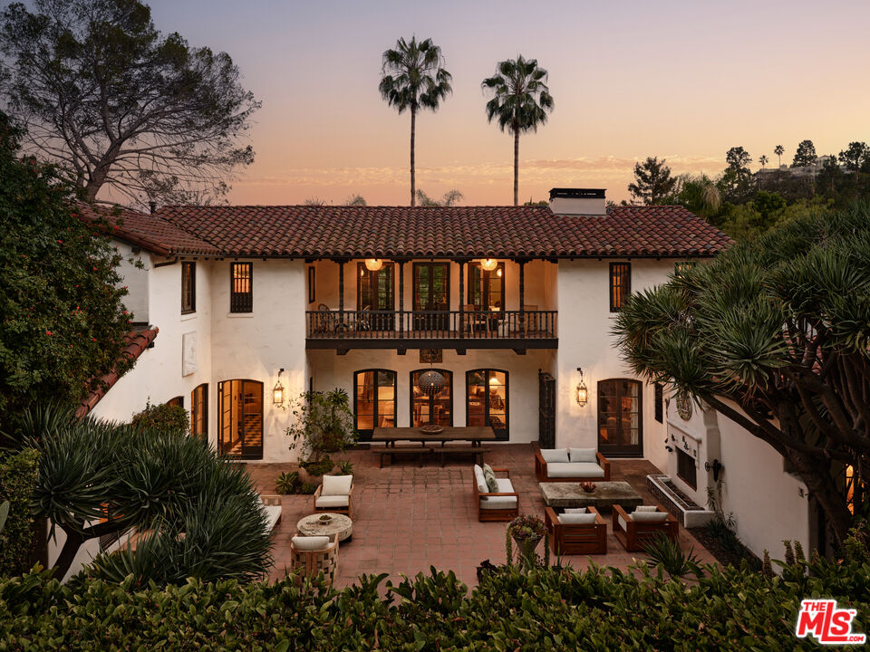
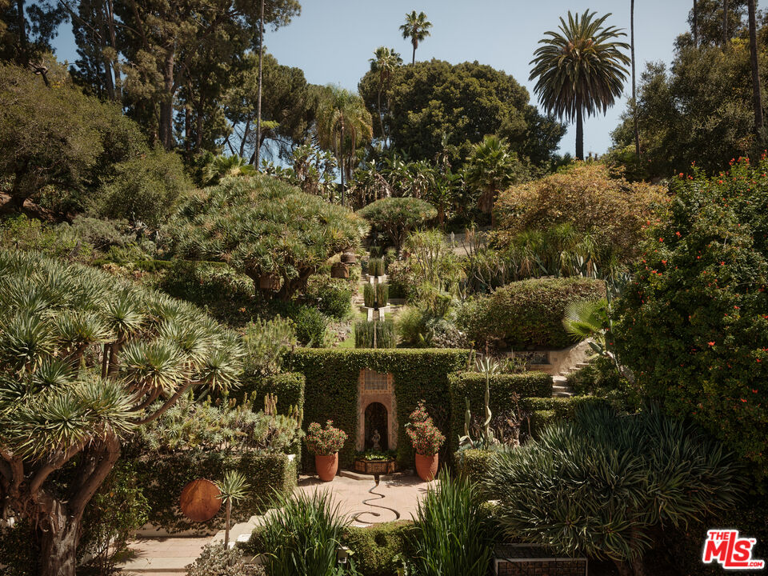
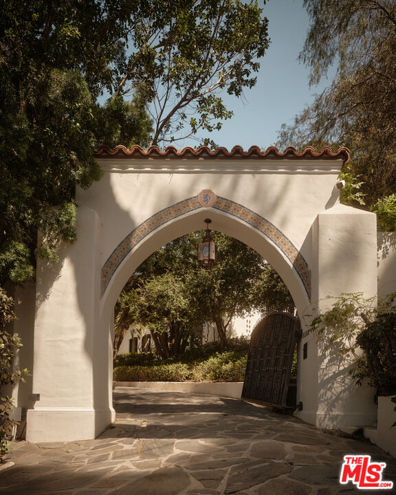
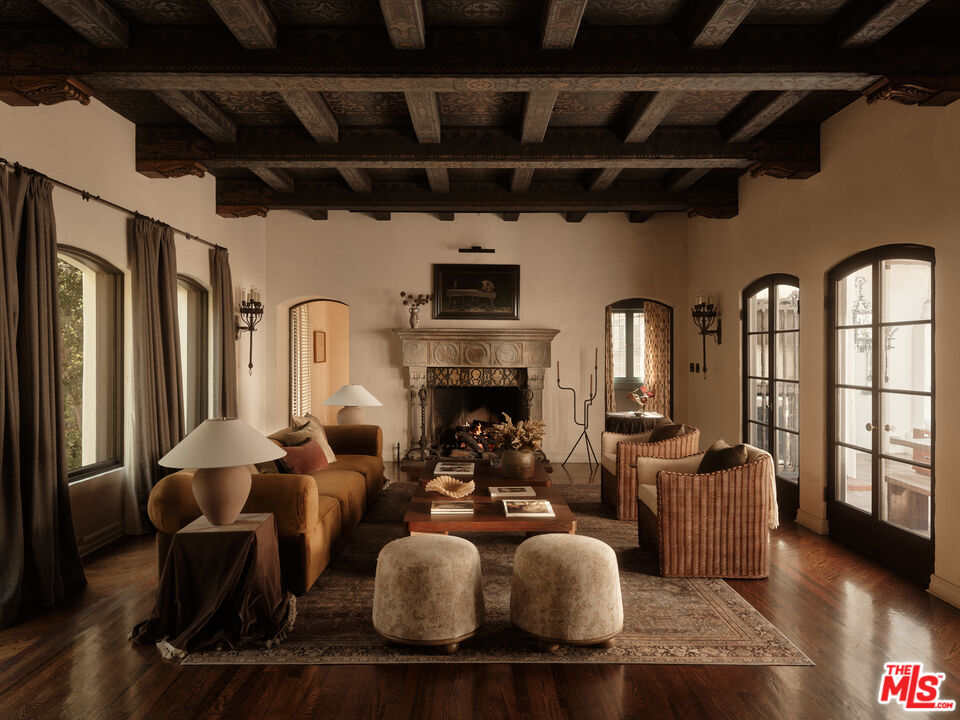

Obsession No. 006Los Feliz
2666
Aberdeen Ave
I have walked this house with clients, alone, and trailing a whole pack of other agents, and it gets me every single time.
Why it made the edit
“Every single time it does something to me.”
I have walked this property more times than I can count, with clients, completely alone just to sit with it, and more than once trailing a pack of other agents on caravan, and every single time it does something to me.
2666 Aberdeen sits on nearly an acre and a half in the Los Feliz hills, a 1922 Spanish Colonial Revival designed by Stiles O. Clements that made its Architectural Digest debut two years after it was finished.
Hand-painted beams, stained glass windows, terraced grounds with a pool, spa, and koi pond, and yes, an actual passageway to a speakeasy behind a vault door.
One of my favorite versions of this house was staged by Franchesca Grace. I did not think it could get more beautiful or more mystical than it already was, and then I walked in and it had.
If you want to see it for yourself, I'd love to show you.



Want to see it in person?
Curious about this one?
Let’s talk.
Listed by Ben Belack, Serhant California, Inc. House of Zonshine does not represent this listing. Property details are from listing information and public sources and should be independently verified.